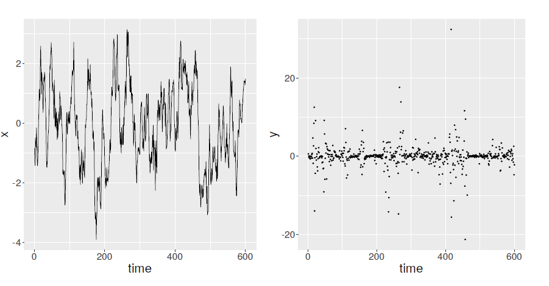

Nobel laureate Niels Bohr is famously quoted as saying, “Prediction is very difficult, especially if it’s about the future.” The science (or perhaps the art) of forecasting is no easy task and lends itself to a large amount of uncertainty. For this reason, practitioners interested in prediction have increasingly migrated to probabilistic forecasting, where an entire distribution is given as the forecast instead of a single number, thus fully quantifying the inherent uncertainty. In such a setting, traditional metrics of assessing and comparing predictive performance, such as mean squared error (MSE), are no longer appropriate. Instead, proper scoring rules are utilized to evaluate and rank forecast methods. A scoring rule is a function that takes a predictive distribution along with an observed value and outputs a real number called the score. Such a rule is said to be proper if the expected score is maximized when the predictive distribution is the same as the distribution from which the observation was drawn.
Many proper scoring rules exist, such as the continuous ranked probability score (CRPS) and the logarithmic score. Choosing which rule to use is not necessarily straightforward. Furthermore, forecast methods are often selected not based on a single score, but rather averages of scores from many probabilistic forecasts, which can introduce new challenges affecting how one might rank competing forecasts. In the paper under discussion, Bolin and Wallin define several properties of scoring rules that help clarify how the rules behave when multiple forecast scores are averaged. Additionally, they introduce a new class of proper rules that aims to overcome some of the deficiencies of other common scoring rules.
Title: Local scale invariance and robustness of proper scoring rules
Author(s) and year: David Bolin and Jonas Wallin (2023)
Status: Published in Statistical Science, DOI: 10.1214/22-STS864.
The authors argue that situations are often encountered where forecasts are derived and subsequently averaged for observations with different inherent variability. One example might be financial data, such as stock returns, where there are commonly periods with much higher variance (known as volatility in the financial setting). Such processes can be represented using a model known as stochastic volatility, where the variance of observed data evolves randomly over time. Figure 1 plots an example path of the data-generating process under such a model. When data exhibits this varying uncertainty, many proper scoring rules will assign a score whose magnitude changes for those observations with more variability, a characteristic the authors term scale dependence. Some rules will ‘punish’ observations with higher uncertainty, and others may ‘reward’ such observations. Hence, when averaging multiple scores, observations will not be treated symmetrically, which the authors argue can “lead to unintuitive forecast rankings.”

Figure 1: Left, a time series of volatility, and right, the resulting observations under a standard stochastic volatility model.
Thus, an ideal scoring rule will not suffer from scale dependence. The lack of scale dependence is a property that the authors term local scale invariance. The logarithmic score possesses this attribute, but the CRPS and other scoring rules, like the Hyvärinen score, do not. To address this issue, the authors propose a new class of scoring rules which exhibits local scale invariance. Among this class is a scoring rule dubbed the scaled CRPS (SCRPS), which features many of the desirable qualities of the CRPS but overcomes the scale dependence issue.
Of course, if local scale invariance is all that matters, then we could just use the logarithmic score in all scenarios. But there is another issue to consider when averaging forecast scores – the presence of outliers. In many scenarios, we might encounter observations that are very far outside the normal range, and we don’t want our average forecast performance measure to be greatly thrown off if such an oddity is observed. In other words, we want our proper scoring rules to be robust. In their article, Bolin and Wallin formalize the concept of robustness for scoring rules and show that, in many cases, the logarithmic score is not robust. Yet they also prove their proposed class of scaled scoring rules is not generally robust, although they show that the scoring rules can be modified to be robust (a new scoring rule they term robust SCRPS). Under such a modification, however, the scoring rule would no longer be local scale invariant in the strict sense. Indeed, under the proposed definitions of local scale invariance and robustness, finding a scoring rule that can simultaneously satisfy both criteria seems difficult. The authors conjecture that it may even be impossible.
Hence, this paper raises many questions for future consideration but achieves its goal of showing that evaluating probabilistic forecasts by averaging proper scoring rules is not necessarily a simple matter. Different scoring rules will lead to different rankings of forecasting methods, and the underlying properties of each scoring rule must be considered on a case-by-case basis. Although not discussed in this summary, the authors also compare scoring rules in several scenarios and present the theory behind the ideas examined here. For interested readers who want to dig more into these ideas, check out the full paper published in Statistical Science.
- About the author
- Brian King is currently a senior machine learning research engineer at Arm, working on applying machine learning to hardware verification. He recently completed his PhD in statistics at Rice University, where his research focused on Bayesian modeling and forecasting for time series of counts.
- About DataScienceBites
- DataScienceBites is written by graduate students and early career researchers in data science (and related subjects) at universities throughout the world, as well as industry researchers. We publish digestible, engaging summaries of interesting new pre-print and peer-reviewed publications in the data science space, with the goal of making scientific papers more accessible. Find out how to become a contributor.
- Copyright and licence
- © 2023 Brian King
This post is republished with permission from MathStatBites. Thumbnail image by Brendan Church on Unsplash.
- How to cite
- King, Brian. 2023. “Choosing the right forecast.” Real World Data Science, July 13, 2023. URL